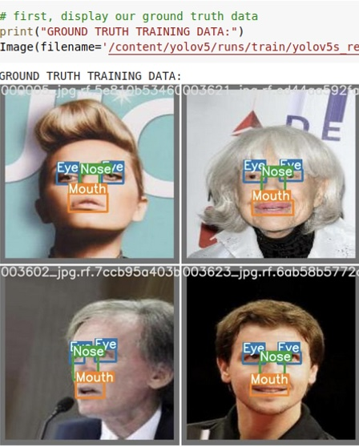

Был создан веб-сервис, основанный на нейросетевой детектирующей модели с последующим отслеживанием объектов на видеозаписи, реализовать сбор статистики в базу данных, с использованием фреймворка для передачи обработанных потоковых видеоданных и произвести развёртывание системы на удаленный сервер. Использовали сверточную нейронную сеть YOLO для детектирования объектов, библиотеку ffmpeg для предварительной обработки видеозаписи, Roboflow в качестве инструмента разметки данных, алгоритм DeepSort для отслеживания объектов, контейнер Docker для развёртывания на сервер, базу данных PostgreSQL для сбора статистики, фреймворк GStreamer для работы с потоковыми данными.
